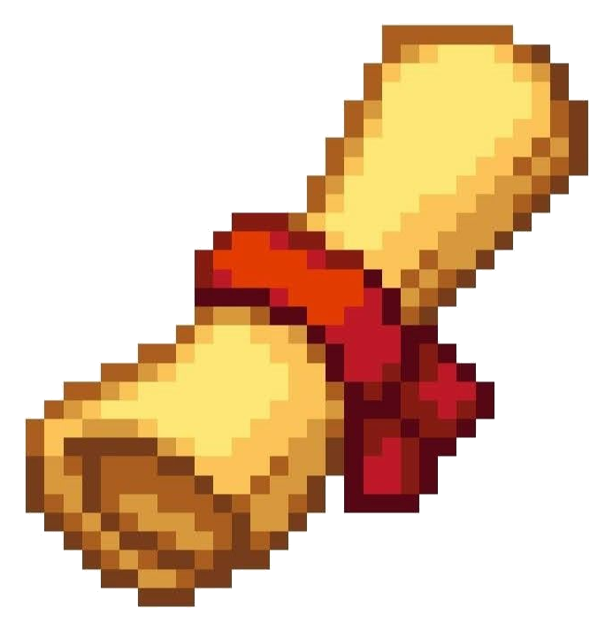
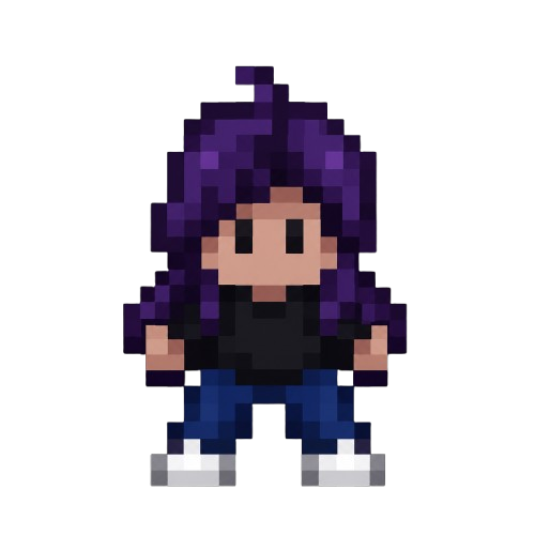
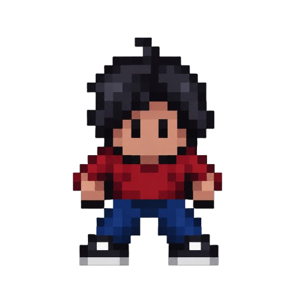

Moniquirá siente el peso
de la contaminación.
Ponte en los zapatos de Luz y recorre Moniquirá cumpliendo misiones ambientales. Recoge y clasifica cada residuo correctamente para cuidar su entorno y su gente: de ti depende que el pueblo quede restaurado.
Agua limpia
Ciudades sostenibles
Consumo responsable
Educación de calidad
Historia del videojuego

El punto de partida
Luz vuelve a Moniquirá después de un tiempo fuera y encuentra su pueblo contaminado. Es su hogar y no quiere quedarse de brazos cruzados, así que decide actuar de inmediato.
Un viaje que se transforma
Luz enfrenta la contaminación, los residuos regados y las decisiones de la comunidad. Cada acción del jugador cambia poco a poco el estado de Moniquirá.

El final depende de ti
El final es que Moniquirá queda restaurada, limpia y llena de vida. Pero solo se logra si tú lo haces posible: cada residuo que recoges y clasificas bien acerca a Luz a ese final. Tus decisiones cuentan.

Inspirado en la realidad
Inspirada en la situación real de Moniquirá y en lugares reconocibles del municipio, contada como una aventura para entender el problema jugando y aprendiendo.
Personajes

Luz
Protagonista del juego. Recorre Moniquirá cumpliendo cada misión para cuidar su municipio y su gente, tomando decisiones que definen el estado de Moniquirá.
Cielo
Voluntaria que cuida el Parque Simón Bolívar desde hace años. Luz ayuda a Cielo a recoger y clasificar cada residuo correctamente para que el parque vuelva a quedar limpio.

Wilson
Campesino que llega cada día a la plaza de mercado a vender lo que cultiva. Luz le enseña a Wilson por qué cuidar el entorno importa para Moniquirá.

Sergio
Patrullero de la estación de policía cercana al puente Jaime Castro, experto en seguridad. Luz le ayuda a entender cómo cuidar el puente y el río.
Kate
Administra la pista de patinaje de Moniquirá desde años atrás, pero no sabe nada de reciclaje. Luz ayuda a Kate a clasificar los residuos para que la pista vuelva a estar limpia.
Misiones del videojuego
1. Parque Simón Bolívar
ODS 11El parque está cubierto de basura entre sus árboles. La misión de Luz es recorrerlo, recoger cada residuo y clasificarlo para devolverle su color.

2. Plaza de Mercado
ODS 12La plaza principal del pueblo está llena de bolsas rotas y basura regada. Luz debe recorrerla, recoger cada residuo y clasificarlo bien.
3. Puente Jaime Castro
ODS 6El puente y el río que corre bajo él están regados de basura de un lado a otro. Luz debe recorrerlo, recoger cada residuo y clasificarlo bien.
4. Pista de Patinaje
ODS 11La pista de patinaje, de las más afectadas, está llena de envases y basura. Luz debe recorrerla, recoger cada residuo y clasificarlo bien.

5. Moniquirá Renace
ODS 4Con todo recuperado, la misión final es recorrer Moniquirá completo y disfrutar el resultado: calles limpias y un pueblo que cuida su entorno.
Equipo

Sergio
Villamil

Sharick
Mendoza

Sevastian
Guerrero
Ayuda

¿Cómo empiezo?
Ve a la sección Descargar, baja el instalador del juego y ábrelo. Una vez dentro, Luz te guía paso a paso en cada misión: solo sigue las indicaciones.

¿Problemas para jugar?
Verifica que tengas Windows y espacio suficiente. Si el juego no abre o se traba, ciérralo y ábrelo de nuevo; si sigue, escríbenos por nuestras redes.
Síguenos en nuestras redes
Descargar Eco-Dulce
La versión completa del juego, lista para jugar en tu computador.
- Plataforma: Windows (.exe)
- Motor: RPG Maker XP
- Misiones: 5
- Peso estimado: por confirmar